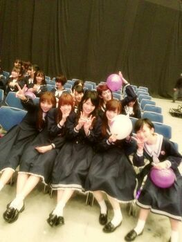

やあ〜
Rotty☆だよっ !
この写メは
おでころってぃ-の
時のなんだけど
前々から
この写メ好きやから
久々blogに貼ったら♪?って
ゆってくれる人が
身近な人にいたからさっ( ´▽`)
昨日ね 用事終わってから
カラオケに行ったのね、
ほなら腹筋 筋肉痛やからさあ
うまいこと力が入らんくて
よう分からんくて
(裏返ったりね。)
なんかおもろかった*´―`)/笑
だから 途中から
ボーとしてたおーん。
昨日 衣装フィッティングで
アンダーメンバー
集まったんだけど
5分で終わった。
時間かけて来て
１着だけ着替えて
時間かけて帰る...
何か悲しいぜー 笑
だから、ひな(川後)♪と
大好きな カルボナーラ)))
食べて帰ったおん( /´▽`)/
カルボナーラ大(〃З〃)-☆き。
ひなも好き。
今日は これから
リハーサルですん(´▽`)
時間にルーズの逆☆って
何てゆーのぉ〜〜??
まひろね、
集合時間より大分早く
来ちゃうんだよね...
今も１人ぃ〜
早く誰か来てよぉーう(´；ω；｀)
ぢゃあ 大人しく待っときます。
皆ばぁーいばーーい♪//

のし。
皆のことも好きよ\(〃ε〃\)